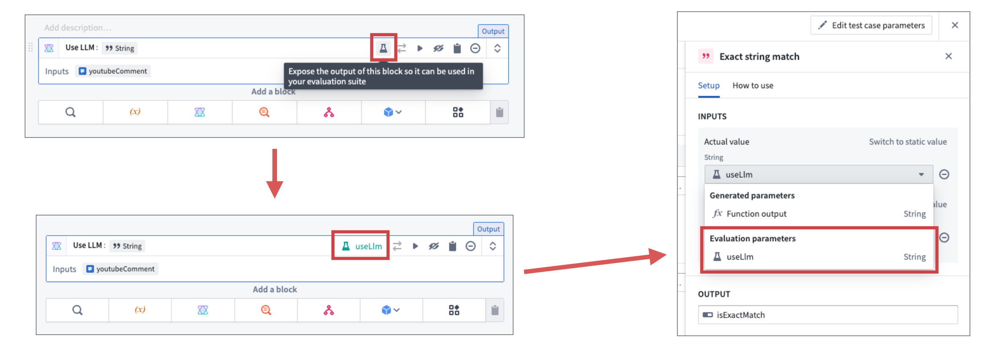

LLM-backed functionality often includes multiple complex operations, and only evaluating the end result may be insufficient to determine prompt performance.
With AIP Logic and AIP Evals you can set up intermediate parameters for evaluation. Similar to final function outputs, intermediate outputs can be used for setting up automated evaluators, or to simply look at the results. Intermediate parameter output values will be included in the evaluation suite results dataset should one be set up.
To set up intermediate parameters for evaluation, follow these steps:
